Goodwill er en immateriell eiendel som oppstår når et selskap kjøper et annet selskap for en pris som overstiger den virkelige verdien av de identifiserbare eiendelene minus gjeld. Goodwill representerer imaterielle verdier som merkevaregjenkjenning, kundelojalitet, ansattes kompetanse og markedsposisjon som ikke kan måles direkte, men som bidrar til selskapets fremtidige inntjeningsevne. I norsk kontoplan registreres goodwill på konto 1080.
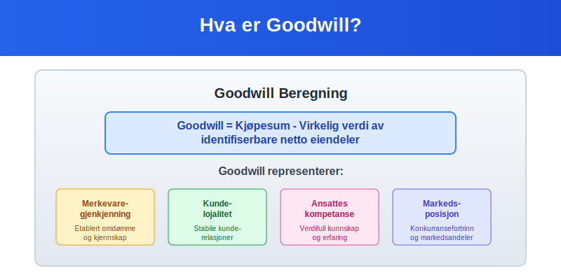
Seksjon 1: Definisjon og Grunnleggende Konsepter
1.1 Hva er Goodwill?
Goodwill er forskjellen mellom kjøpesummen for et selskap og den virkelige verdien av dets identifiserbare netto eiendeler. Dette konseptet er sentralt i regnskapsføring ved oppkjøp og fusjoner.
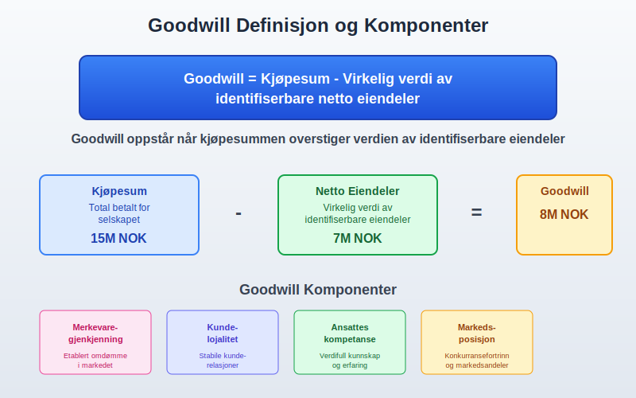
1.2 Komponenter av Goodwill
Goodwill består av flere immaterielle faktorer:
- Merkevaregjenkjenning: Etablert omdømme og kjennskap i markedet
- Kundelojalitet: Stabile og lojale kunderelasjoner
- Ansattes kompetanse: Verdifull kunnskap, erfaring og ferdigheter
- Markedsposisjon: Konkurransefortrinn og markedsandeler
- Synergier: Forventede kostnadsbesparelser og inntektsøkninger
- Teknologi og prosesser: Proprietære systemer og arbeidsmetoder
1.3 Typer Goodwill
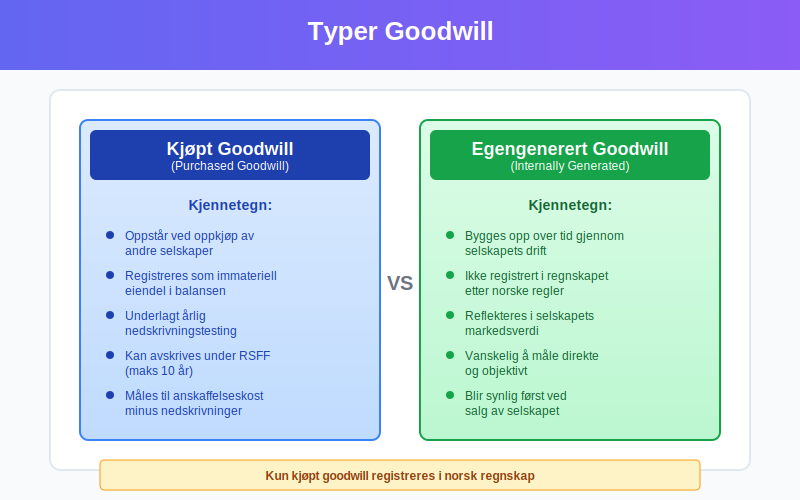
Det finnes to hovedtyper goodwill:
Kjøpt Goodwill (Purchased Goodwill)
- Oppstår ved oppkjøp av andre selskaper
- Registreres som immateriell eiendel i balansen
- Underlagt nedskrivningstesting
Egengenerert Goodwill (Internally Generated Goodwill)
- Bygges opp over tid gjennom selskapets drift
- Ikke registrert i regnskapet etter norske regnskapsregler
- Reflekteres i markedsverdien av selskapet
Seksjon 2: Beregning av Goodwill
2.1 Grunnleggende Beregningsformel
Goodwill = Kjøpesum - Virkelig verdi av identifiserbare netto eiendeler
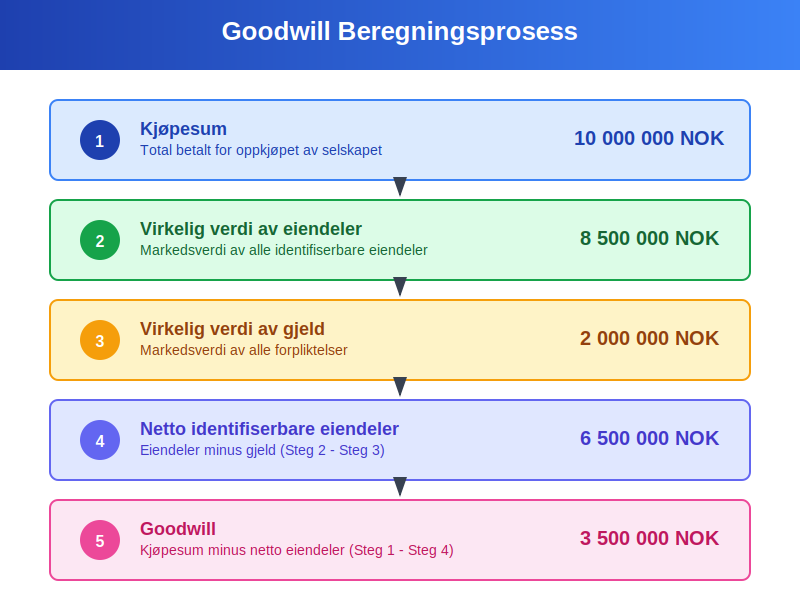
2.2 Detaljert Beregningsprosess
| Steg | Beskrivelse | Eksempel (NOK) |
|---|---|---|
| 1 | Kjøpesum | 10 000 000 |
| 2 | Virkelig verdi av eiendeler | 8 500 000 |
| 3 | Virkelig verdi av gjeld | 2 000 000 |
| 4 | Netto identifiserbare eiendeler (Steg 2 - Steg 3) | 6 500 000 |
| 5 | Goodwill (Steg 1 - Steg 4) | 3 500 000 |
2.3 Praktisk Eksempel: Oppkjøp av Teknologiselskap
La oss se på et praktisk eksempel hvor TechCorp AS kjøper InnoSoft AS:
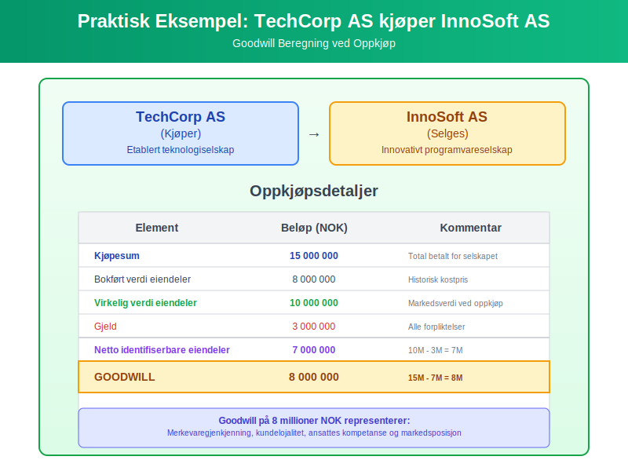
Oppkjøpsdetaljer:
- Kjøpesum: 15 millioner NOK
- Bokført verdi av eiendeler: 8 millioner NOK
- Virkelig verdi av eiendeler: 10 millioner NOK
- Gjeld: 3 millioner NOK
Beregning:
- Netto identifiserbare eiendeler til virkelig verdi: 10M - 3M = 7M NOK
- Goodwill: 15M - 7M = 8 millioner NOK
Seksjon 3: Regnskapsføring av Goodwill
3.1 Førstegangsregistrering
Ved oppkjøp registreres goodwill som en immateriell anleggsmiddel:
Regnskapspost:
Debet: Goodwill 8 000 000
Debet: Andre eiendeler 10 000 000
Kredit: Gjeld 3 000 000
Kredit: Bank/Kontanter 15 000 000
3.2 Etterfølgende Måling
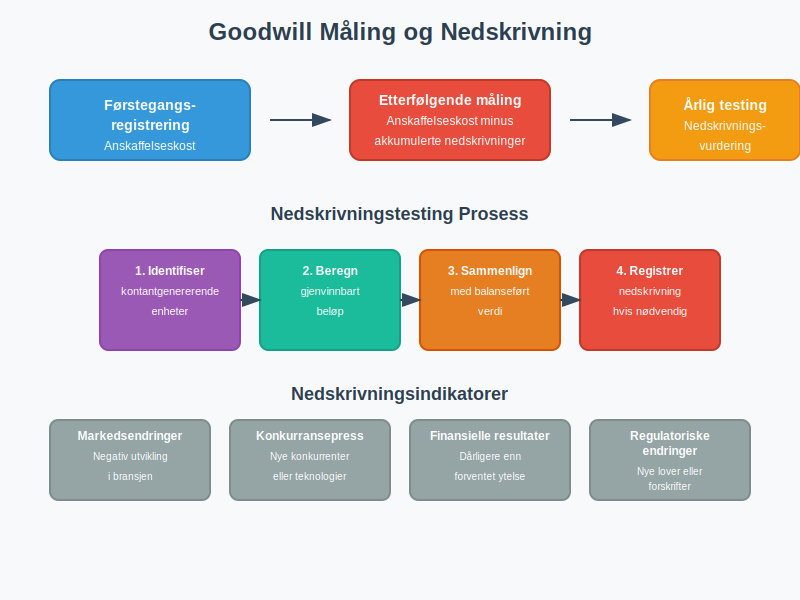
Etter førstegangsregistrering måles goodwill til:
- Anskaffelseskost minus
- Akkumulerte nedskrivninger
3.3 Nedskrivningstesting
Goodwill avskrives ikke på systematisk basis, men må testes for nedskrivning minst årlig:
Nedskrivningsindikatorer:
- Markedsendringer: Negativ utvikling i bransjen
- Konkurransepress: Nye konkurrenter eller teknologier
- Finansielle resultater: Dårligere enn forventet ytelse
- Regulatoriske endringer: Nye lover eller forskrifter
Nedskrivningsprosess:
- Identifiser kontantgenererende enheter
- Beregn gjenvinnbart beløp
- Sammenlign med balanseført verdi
- Registrer nedskrivning hvis nødvendig
Seksjon 4: Goodwill i Norske Regnskapsregler
4.1 Regnskapsstandard for Små Foretak (RSFF)
Under RSFF kan goodwill:
- Avskrives over maksimalt 10 år
- Nedskrives ved verdifall
- Ikke reaktiveres etter nedskrivning
4.2 Norsk Regnskapslov og God Regnskapsskikk
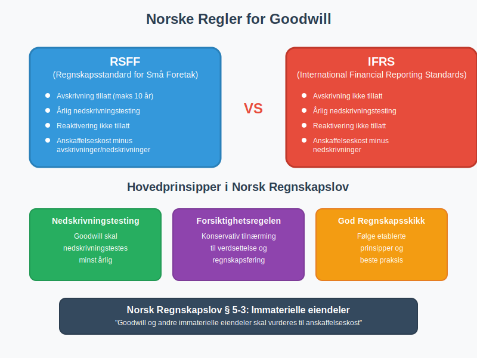
Hovedprinsipper:
- Goodwill skal nedskrivningstestes årlig
- Systematisk avskrivning er ikke tillatt under IFRS
- Forsiktighetsregelen gjelder ved verdsettelse
4.3 Sammenligning: RSFF vs IFRS
| Aspekt | RSFF | IFRS |
|---|---|---|
| Avskrivning | Tillatt (maks 10 år) | Ikke tillatt |
| Nedskrivningstesting | Årlig | Årlig |
| Reaktivering | Ikke tillatt | Ikke tillatt |
| Måling | Anskaffelseskost minus avskrivninger/nedskrivninger | Anskaffelseskost minus nedskrivninger |
Seksjon 5: Verdsettelse og Vurdering
5.1 Metoder for Verdsettelse
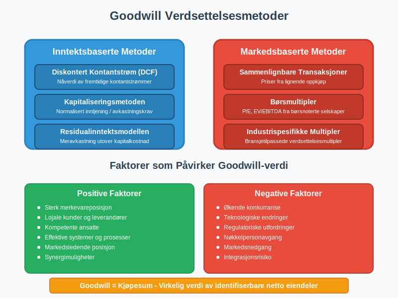
Inntektsbaserte Metoder:
- Diskontert kontantstrøm (DCF)
- Kapitaliseringsmetoden
- Residualinntektsmodellen
Markedsbaserte Metoder:
- Sammenlignbare transaksjoner
- Børsmultipler
- Industrispesifikke multipler
5.2 Faktorer som Påvirker Goodwill-verdi
Positive faktorer:
- Sterk merkevareposisjon
- Lojale kunder og leverandører
- Kompetente ansatte
- Effektive systemer og prosesser
- Markedsledende posisjon
Negative faktorer:
- Økende konkurranse
- Teknologiske endringer
- Regulatoriske utfordringer
- Nøkkelpersonavgang
- Markedsnedgang
Seksjon 6: Goodwill i Ulike Bransjer
6.1 Teknologisektoren
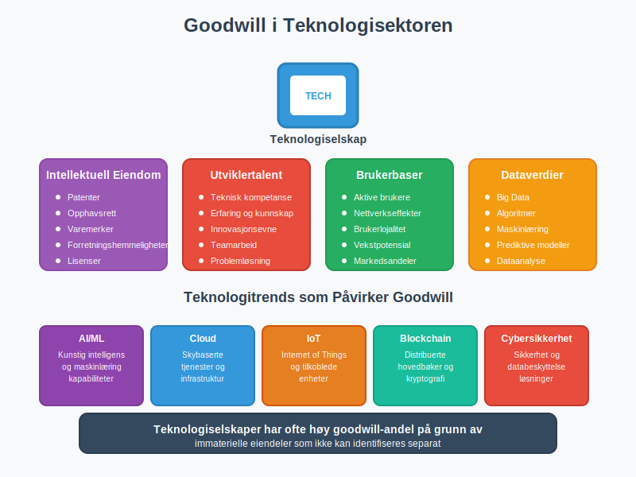
I teknologiselskaper består goodwill ofte av:
- Intellektuell eiendom og patenter
- Utviklertalent og teknisk kompetanse
- Brukerbaser og nettverkseffekter
- Dataverdier og algoritmer
6.2 Detaljhandel
Goodwill-komponenter:
- Merkevaregjenkjenning og kundelojalitet
- Beliggenhet og etablerte handelssteder
- Leverandørrelasjoner og innkjøpsavtaler
- Distribusjonsnett og logistikksystemer
6.3 Tjenesteyting
Viktige elementer:
- Klientrelasjoner og gjentakende inntekter
- Profesjonell ekspertise og omdømme
- Prosesser og metodikk
- Nettverk og partnerskap
Seksjon 7: Praktiske Utfordringer og Løsninger
7.1 Vanlige Utfordringer
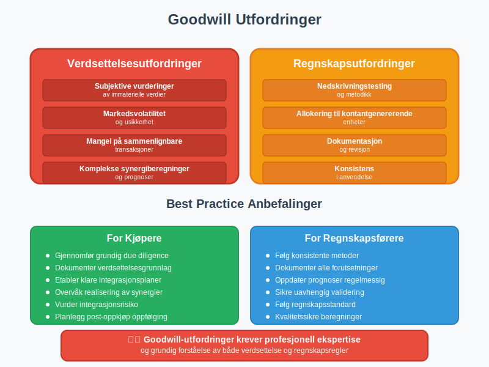
Verdsettelsesutfordringer:
- Subjektive vurderinger av immaterielle verdier
- Markedsvolatilitet og usikkerhet
- Mangel på sammenlignbare transaksjoner
- Komplekse synergiberegninger
Regnskapsutfordringer:
- Nedskrivningstesting og metodikk
- Allokering til kontantgenererende enheter
- Dokumentasjon og revisjon
- Konsistens i anvendelse
7.2 Best Practice Anbefalinger
For kjøpere:
- Gjennomfør grundig due diligence
- Dokumenter verdsettelsesgrunnlag grundig
- Etabler klare integrasjonsplaner
- Overvåk realisering av synergier
For regnskapsførere:
- Følg konsistente metoder for nedskrivningstesting
- Dokumenter alle vesentlige forutsetninger
- Oppdater prognoser regelmessig
- Sikre uavhengig validering av verdivurderinger
Seksjon 8: Goodwill og Skattemessige Forhold
8.1 Skattemessig Behandling
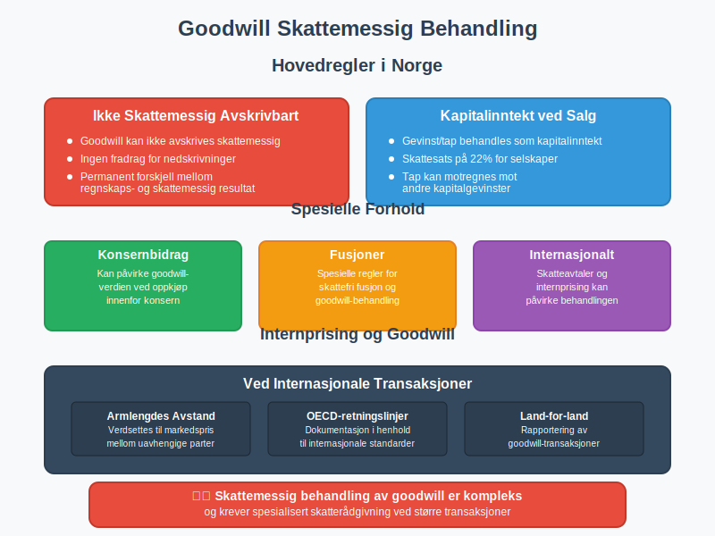
Hovedregler:
- Goodwill er ikke skattemessig avskrivbart i Norge
- Gevinst/tap ved salg behandles som kapitalinntekt
- Konsernbidrag kan påvirke goodwill-verdien
- Fusjoner har spesielle regler
8.2 Internprising og Goodwill
Ved internasjonale transaksjoner må goodwill:
- Verdsettes til armlengdes avstand
- Dokumenteres i henhold til OECD-retningslinjer
- Rapporteres i land-for-land rapportering
Seksjon 9: Fremtidige Utviklingstrender
9.1 Digitalisering og Goodwill
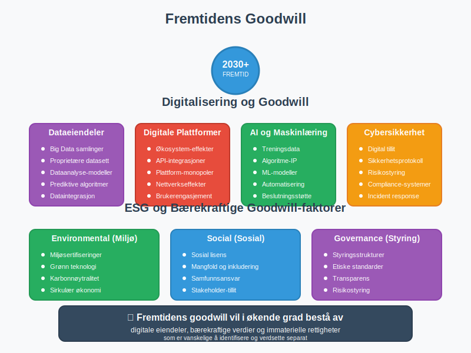
Nye goodwill-komponenter:
- Dataeiendeler og algoritmer
- Digitale plattformer og økosystemer
- Kunstig intelligens og maskinlæring
- Cybersikkerhet og digital tillit
9.2 ESG og Bærekraft
Bærekraftige goodwill-faktorer:
- Miljøsertifiseringer og grønn teknologi
- Sosial lisens til å operere
- Styringsstrukturer og etikk
- Omdømmekapital knyttet til bærekraft
Seksjon 10: Konklusjon og Nøkkelpunkter
10.1 Sammendrag
Goodwill er en kompleks men viktig immateriell eiendel som krever:
- Grundig forståelse av verdsettelsesprinsipper
- Konsistent anvendelse av regnskapsregler
- Regelmessig overvåking og nedskrivningstesting
- Profesjonell dømmekraft i vurderinger
10.2 Nøkkelpunkter å Huske
- Goodwill oppstår kun ved oppkjøp av andre selskaper
- Det representerer immaterielle verdier som ikke kan identifiseres separat
- Nedskrivningstesting er påkrevd minst årlig
- Norske regnskapsregler tillater avskrivning under RSFF
- Verdsettelse krever profesjonell ekspertise og dømmekraft
10.3 Relaterte Artikler
For å få en dypere forståelse av relaterte konsepter, anbefaler vi å lese:
- Hva er imaterielle rettigheter?
- Hva er anleggsmidler?
- Hva er avskrivning?
- Hva er amortisering?
- Hva er balanse?
- Konto 1000 - Forskning og utvikling
- Hva er et aksjeselskap?
Goodwill vil fortsette å være et sentralt element i moderne regnskapsføring, spesielt ettersom immaterielle eiendeler blir stadig viktigere i dagens kunnskapsøkonomi.